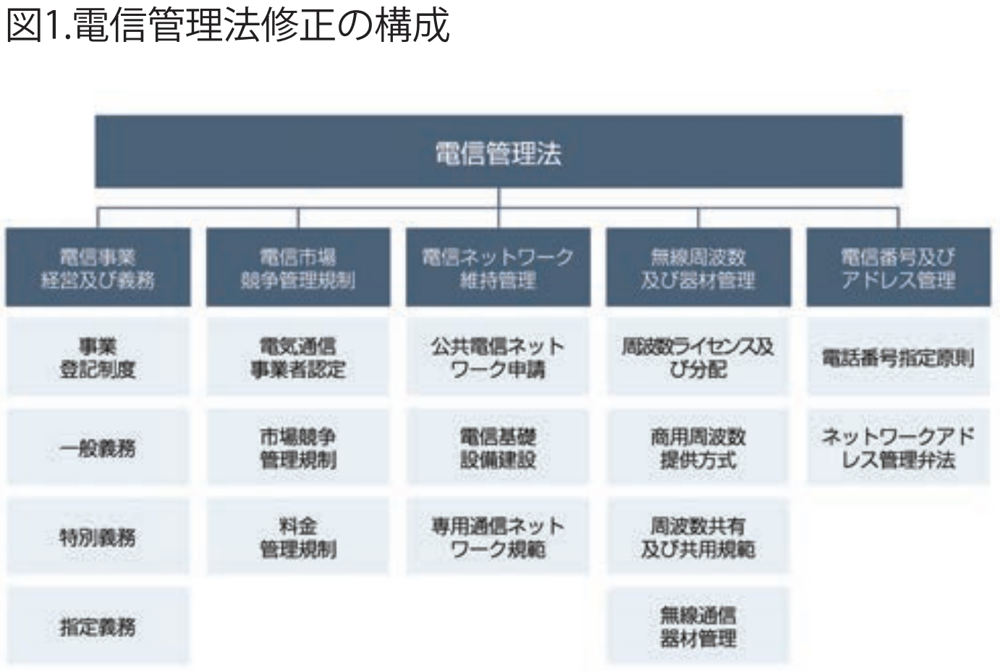

台湾業界トップの移動通信業者である中華電信は、2020 年 6 月 30 日に 5G サービスの正式運用開始と同時に、台湾が本格 的に 5Gの時代に入ったことを宣言した。行政院と国家通訊伝播委員会が共に台湾の通信産業支援策を多数打ち出すことで、 5G 業界発展や技術革新強化、異業種での統合のきっかけとなることが期待される。
修正電信管理法が2020年7月1日から正式施行された。この
修正は電信サービスの急速な発展に対応するためで、電信市
場への参入機会を広げることとなった。
電子管理法の最大の変化は、登録制を採用し電信市場参入
条件を緩和した点である。電信事業を登録制にすることで、従
来国家通訊伝播委員会の規制管理下にある業者のみが対象
だった公共電信ネットワーク運営に、今後はより多くの革新的
な電信事業者が参入できるようになる。このほか、電信管理法
では「帯域共用・ネット共有・共同建設」をコンセプトに、電信業
者が認可取得後は落札した帯域を外の業者と共用、ないし不
要帯域権を返還し再競売などの取引制度を設け、電信業者が
台湾の電信用帯域を有効利用できるようにしている。
電信管理法ではイノベーティブ試験帯域・企業のプライベー
トネットワーク帯域といった多くの専用帯域を開放する構想も
ある。より多くの電信帯域資源が、衛星運営業者やスマート交
通ソリューション・スマート展示会・スマートエンタテインメント
など非公共電信事業者である多様化するITソリューション企
業に提供され、平等に電信資源の獲得が可能になることで、今
後は多様で革新的な5G応用が生まれると見られる。政府は既
に先行実験の必要性をうけ4.8-4.9GHzの試験用帯域を開放
しており、IoTやIoV業者が革新的サービスPoC実施に関連し
た電信資源を提供している。
同時に電信運営条件の緩和において、遠伝電信と亜太電信
とが3.6GHｚの商用5G帯域を共同利用し、移動通信と固定通
信の資源を統合し関連するスマート化ソリューション推進で協
力するケースのように、電信運営モデルの多様化に合わせて共
同形態で5G応用推進を行う電信業者が出てきている。
電信管理法の規制緩和は、台湾の多くの業者にとっても事
業転換のきっかけとなり、楽天モバイルにコアネットワークサー
バーを提供している雲達電脳（QCT）も5G移動通信市場参入
に成功し、レッドハットやインテルの5Gオープンネットワーク
パートナーとなった。

台湾のスマート機械産業政策促進、および各産業のスマート
製造化や5G応用発展に向けて2019年に産業創新条例修正
案が行政院を通過し、スマート機械購入や5G関連設備技術投
資に関するコスト低減措置が提供されたことで、産業のスマー
ト転換と5G応用能力構築の動きが加速し産業高度化転換の
刺激となる。このほか行政院は「台湾5G行動計画」を発表し、
政府主導の台北流行音楽センター、林口スタートアップテラス、
サルンスマートコミュニティなどの5G応用実験場を設立し、5G
によるデジタル発展モデルを立ち上げている。
産業創新条例の周知が進むにつれて、電信業者が国内外、
産官学研など多方面で連携する5Gイノベーティブ応用の時代
が幕を開けようとしている。2020年には中華電信は8K映像設
備および台北市の台北流行音楽センターとの協力で「5G会
場」を構築し、台北流行音楽センター内では会場内で5Gサー
ビスを提供するだけでなく、同時に5Gメディアセンターも設立
し、遠隔地での4Kライブストリーミングおよびリアルタイム同時
パフォーマンスなどのスマート機能を実現している。
2020年からの5G通信サービス発展開始に鑑み、行政院は
台湾の「デジタル国家、イノベーティブ経済発展法案」（略称は
DIGI+計画）に基づいて204億元の研究開発費を投入する。
5G実証応用計画の推進支援と5G試験試験建設強化をはか
り、DIGI+計画進行に合わせ、5G舞台劇、長庚養生村やサルン
スマート自動運転実験室内の5Gスマート自動運転試験場な
ど、多くの試験場建設と実証試験の実施を行っている。台湾の
スマート製造トップ企業であるTSMCと台湾プラスチックも企
業向けローカル5Gネットワーク建設に着手した。
5G試験場は台湾の電信業者が積極的に推進する以外に
も、多くのスマート応用サービス提供企業が電信市場やソ
リューションビジネスに参入する機会にもなっている。自動運転
産業では高精度マッピング業者の勤威国際（Kingway）、台湾
智駕（Turing）が５G試験場での試験に参加しており、サーバー
サプライヤーにはメディアテック、アドバンテック、クアンタが、ス
マートパフォーマンスではパナソニックなどが試験に参加してい
る。応用サービスが幅広くなるに従い、多種多様な応用サービ
スが急速な発展を遂げている。SI、通信技術、チップベンダーや
ソフトウェア開発企業など、応用サービスに適した技術があれ
ば有利となり、応用サービスが増えれば台湾の5G市場の発展
につながる。
また地方政府も、DIGI+計画の発展にしたがい国内外業者
の提携に積極的に動き、スマート実験場の応用と発展を推進し
ている。最近では台南市政府が推進している「5Gチーム台南」
では、通信機器業者のアスキー、サーバーのQCT、4K/8Kチッ
プ開発のソシオネクスト、無人車両開発のGEOSAT、スマート
応用システムサービスのNTTデータなどが協力し、5Gイノベー
ションサービスを共同で構築した。
チーム台南は既に実験場にスマート製造サービスを導入し
ており、製造業者に対し5Gとスマート認証技術を利用し製品の
問題検出、生産ライン全体運用効率向上や製造問題分析迅速
化、製造コスト低減の実現を支援する。
以上をまとめると、5Gスマート応用推進に関し、台湾では既 に電信管理法の整備が完成しており、電信管理法によるオープ ンな管理構成に基づき、電信業者以外のIT業者にも5Gスマー ト応用への参入機会が提供されている。各産業分野では、産業 創新条例の発展に伴い、各地方政府管轄下で5Gスマート応用 サービスの可能性について多くの実証試験が実施されている。 同時に、各産業のスマート応用導入に対し、行政院のDIGI+計 画補助により製造業者、物流業者なども5G応用スマート化導 入により積極的になると見られる。